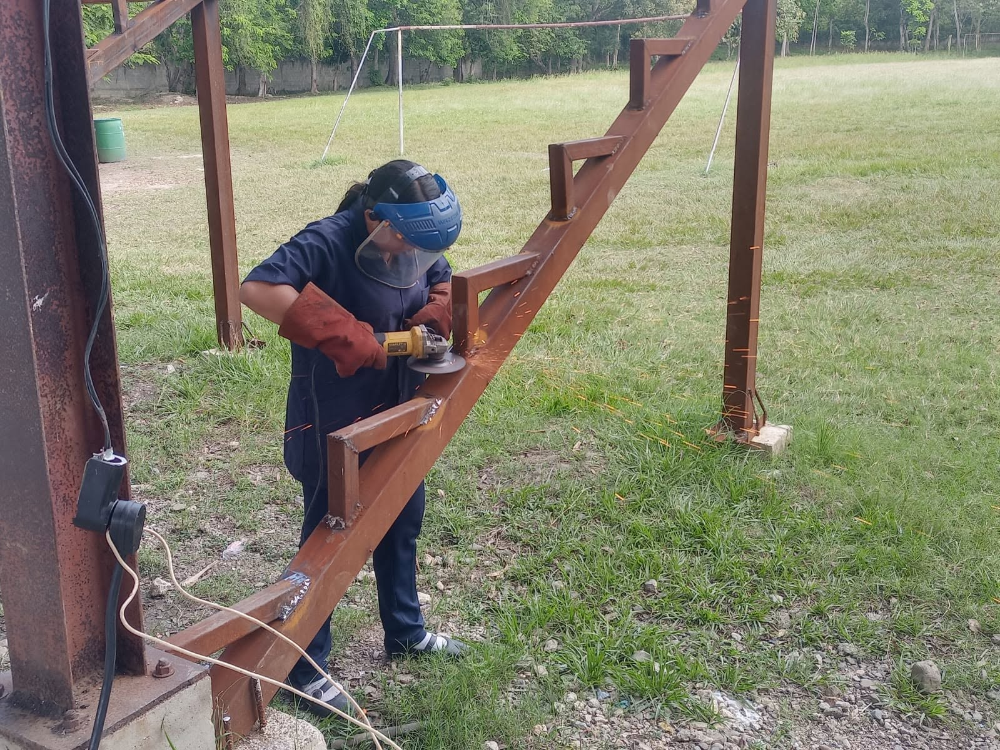
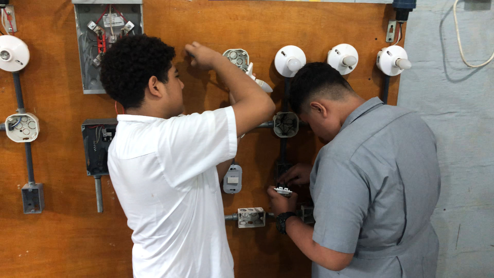
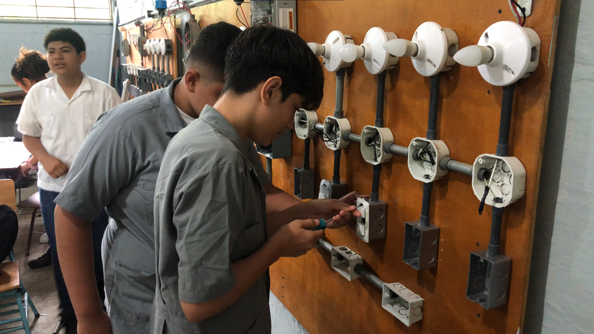

Principios básicos de circuitos
Nociones de corriente, conexión y funcionamiento de un circuito eléctrico sencillo.
Formación inicial en fundamentos eléctricos, instalaciones y uso responsable de herramientas.
Sobre el taller
Esta orientación forma parte del III Ciclo con Orientación Técnica, que el instituto ofrece de séptimo a noveno grado junto a la modalidad básica.
Nociones de corriente, conexión y funcionamiento de un circuito eléctrico sencillo.
Normas de protección personal y manejo cuidadoso del equipo antes de cada práctica.
Ejercicios acompañados por el docente para aplicar en el taller lo visto en clase.
El taller por dentro



Las otras orientaciones
La orientación técnica se elige al matricularse en el III Ciclo. Consulta los requisitos y las fechas del proceso 2027.